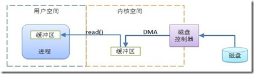
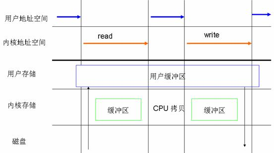

文件描述符
文件描述符：在形式上是一个非负整数，实际是一个索引值，指向内核(kernel)为每一个进程所维护的该进程打开文件的记录表，用以标明每一个被进程打开的文件和socket,指向内核中的一个结构体，只适用于UNIX、Linux系统，windowNT就抓瞎了。
Linux内核将所有外部设备都看作一个文件来操作。我们对一个文件的读写，都通过调用内核提供的系统调用，内核给我们返回一个文件描述符（简称fd，file descriptor），那么我们的应用程序对文件的读写就通过对描述符的读写来完成的。
I/O操作

系统调用是如何完成一个I/O操作的？
Linux将内存分为：内核区(内核空间)、用户区(用户空间)；Linux内核给我们管理所有的硬件资源，应用程序通过调用系统调用和内核进行交互，达到使用硬件资源的目的；
应用程序通过“系统调用read()”发起一个读操作；这时内核创建一个文件描述符，并通过驱动程序向硬件发送读指令，并将读的数据放在这个文件描述符对应结构体的缓存区。但这个结构体是在内核内存区的，需要将这个数据读取到用户区，这样完成了一个读操作。
Linux 2.6提供的文件访问方式
缓存I/O（buffered I/O）又称为标准I/O。大多数文件系统的默认I/O操作都是缓存I/O。
标准访问文件的方式
在Linux中，这种访问文件的方式是通过两个系统调用实现的：read()和write()。 这种访问文件的方式，读写都要先经过缓冲区，尤其是写操作，数据只要被写到页缓存(cache page)中的时候，write()系统调用就算执行完成了，并不会等数据完全写入磁盘。Linux在这里采用了延迟写机制(deferred writes)。
同步访问文件的方式
与标准访问文件方式类似，关键区别是：写操作是在数据完全被写回磁盘才算完成。
内存映射方式
与标准的访问文件的方式相比，内存映射方式可以减少标准访问文件方式中read()系统调用所带来的数据拷贝操作，即减少数据在用户地址空间和操作系统内核地址空间之间的拷贝操作。 当大量数据需要传输时，采用内存映射方式去访问文件会获得比较好的效率。
在很多操作系统包括Linux中，内存区域（memory region）是可以跟一个普通的文件或者块级设备文件的某一个部分关联起来的，若进程要访问内存页（cache page）中的莫哥字节的数据，操作系统就会将访问该内存区域的操作转换为相应的访问文件的某个字节的操作。Liunx提供了系统调用mmap()来实现这种文件访问方式。
直接I/O方式
凡是通过直接I/O方式进行数据传输，数据均直接在用户地址空间的缓冲区和磁盘之间直接进行传输，完全不需要也缓存的支持。

异步访问文件的方式
它是Linux 2.6的一个标准特性，其本质思想是进程发出数据传输请求之后，进程不会被阻塞，也不用等待任何操作完成，进程可以在数据传输的适合继续执行其他的操作。
直接I/O 经常会和异步访问文件的方式结合使用。
日期：2013-07-25
参考资料：Linux 中直接 I/O 机制的介绍、关于文件描述符、文件描述符、深入浅出异步I/O模型、理解Java NIO